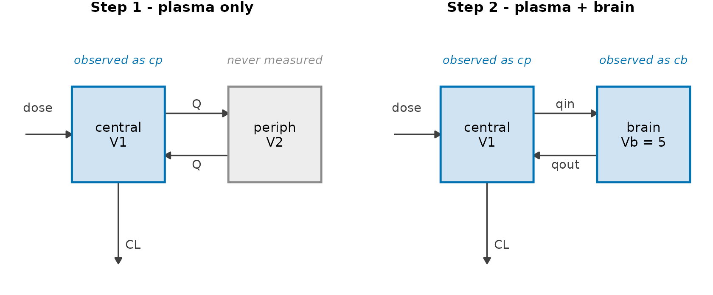

Several observed compartments (plasma and brain)
Source:vignettes/multi-compartment.Rmd
multi-compartment.RmdThe problem
You are developing a CNS drug and you want one number: how much of it reaches the brain? There is no patient-level data, only a published paper with two figures — a plasma and a brain concentration–time curve, each a mean with error bars, which you digitise into a mean and an SD per sampling time.
That summary is what admixr2 is built for: it fits a population PK model directly to means and covariances, so a digitised figure is a fittable dataset. Two steps:
- Plasma only — the ordinary single-output workflow, to set the scene.
- Plasma + brain — add the brain as a second observed output and read the brain-penetration ratio straight off the fit.
Step 1 — Plasma only
Start where every PK analysis starts: the plasma curve. A
study is the digitised summary bundled with its design
— the mean vector E, its variance V (here
SD^2, read as a diagonal covariance, which is all error
bars give you), the sample size n, the sampling
times and the dosing ev.
plasma_times <- c(0.5, 1, 2, 4, 8, 12)
plasma_mean <- c(8.793, 7.812, 6.850, 5.597, 3.985, 2.910)
plasma_sd <- c(1.151, 0.911, 0.765, 0.649, 0.770, 0.828)
plasma_study <- list(
E = plasma_mean, V = plasma_sd^2, n = 60L,
times = plasma_times, ev = ev
)An ordinary two-compartment model with one observed output,
cp, fitted in one call to nlmixr2() with
admixr2’s Gauss–Hermite estimator:
pk_plasma <- function() {
ini({
tcl <- log(1); tv1 <- log(10); tq <- log(3); tv2 <- log(8)
prop.cp <- 0.05
eta.cl ~ 0.09
eta.v1 ~ 0.04
})
model({
cl <- exp(tcl + eta.cl); v1 <- exp(tv1 + eta.v1)
q <- exp(tq); v2 <- exp(tv2)
d/dt(central) <- -(cl/v1)*central - (q/v1)*central + (q/v2)*periph
d/dt(periph) <- (q/v1)*central - (q/v2)*periph
cp <- central / v1
cp ~ prop(prop.cp)
})
}
fit_plasma <- nlmixr2(pk_plasma, admData(), est = "adgh",
control = adghControl(studies = list(trial = plasma_study)))
fit_plasma
── nlmixr² adgh ──
OBJF AIC BIC Log-likelihood
adgh 229.6289 243.6289 270.8316 -114.8144
── Time (sec fit_plasma$time): ──
optimize covariance other elapsed other
elapsed 0.645 0.203 0 0.848 4.777
── Population Parameters (fit_plasma$parFixed or fit_plasma$parFixedDf): ──
Est. SE %RSE Back-transformed(95%CI) BSV(CV%)
tcl 0.03322 0.03552 106.9 1.034 (0.9643, 1.108) 27.92
tv1 2.292 0.01961 0.8557 9.890 (9.517, 10.28) 15.12
tq 0.8830 0.05657 6.406 2.418 (2.164, 2.702)
tv2 0.8678 0.02628 3.028 2.382 (2.262, 2.507)
prop.cp 0.004104 0.001770 43.13 0.004104 (6.351e-4, 0.007573)
Shrink(SD)%
tcl NaN
tv1 NaN
tq
tv2
prop.cp
Covariance Type (fit_plasma$covMethod): r,s
No correlations in between subject variability (BSV) matrix
Full BSV covariance (fit_plasma$omega)
or correlation (fit_plasma$omegaR; diagonals=SDs)
Distribution stats (mean/skewness/kurtosis/p-value) available in $shrink
Information about run found (fit_plasma$runInfo):
• covMethod = "r,s": the Hessian is ill-conditioned (rcond 2.2e-07, cond 4.47e+06), and the sandwich inverts it twice where "r" inverts it once -- so the correction is amplified quadratically in the weakly-identified direction, which loads mainly on `prop.cp`. Check that parameter's relative standard error before reading its "r,s" value as a finding; the well-determined parameters are unaffected.
• admixr2: prop.cp finished on the gradient box constraint (grad_bounds = 5 from the starting value), not at an interior optimum. The reported estimate and SE are those of a constrained fit. Widen grad_bounds, or start closer to the expected value.
Censoring (fit_plasma$censInformation): No censoring
Minimization message (fit_plasma$message):
NLOPT_FTOL_REACHED: Optimization stopped because ftol_rel or ftol_abs (above) was reached. A perfectly good plasma model — and look at what it cannot answer.
periph is a mathematical distribution store: never
measured, and connected to the brain by nothing. Brain exposure needs
brain data and a real brain compartment.
Step 2 — Add the brain
Here are the brain concentrations digitised from the same paper:
brain_times <- c(1, 2, 4, 8, 12)
brain_mean <- c(3.004, 3.394, 3.018, 2.157, 1.551)
brain_sd <- c(0.353, 0.349, 0.309, 0.369, 0.405)Swap the anonymous peripheral compartment for a mechanistic
brain compartment: drug moves plasma → brain with influx
clearance qin and back with efflux clearance
qout. The steady-state brain:plasma ratio is what we are
after:

The two structures. Step 1’s peripheral compartment is a distribution store: drug goes in and comes back, but nothing was ever measured there, so no amount of plasma data says what concentration it holds. Step 2 gives that compartment a volume, a sampled concentration and a name.
With two observed outputs — plasma cp
and brain cb — the model carries a residual-error term for
each. (vb, the brain volume, is a fixed physiological
constant, not an estimated parameter.)
pk_cns <- function() {
ini({
tcl <- log(1); tv1 <- log(10)
tqin <- log(3); tqout <- log(6)
prop.cp <- 0.05 # plasma residual (proportional)
add.cb <- 0.02 # brain residual (additive)
eta.cl ~ 0.09
eta.v1 ~ 0.04
})
model({
cl <- exp(tcl + eta.cl); v1 <- exp(tv1 + eta.v1)
qin <- exp(tqin); qout <- exp(tqout)
vb <- 5
d/dt(central) <- -(cl/v1)*central - (qin/v1)*central + (qout/vb)*brain
d/dt(brain) <- (qin/v1)*central - (qout/vb)*brain
cp <- central / v1 # plasma concentration
cb <- brain / vb # brain concentration
cp ~ prop(prop.cp)
cb ~ add(add.cb)
})
}Two outputs means two summaries. In place of a single
E/V, give the study an
observations list — one named entry per
observed compartment, pairing a model output with its own
times, E and V:
cns_study <- list(
n = 60L, ev = ev,
observations = list(
plasma = list(output = "cp", times = plasma_times, E = plasma_mean, V = plasma_sd^2),
brain = list(output = "cb", times = brain_times, E = brain_mean, V = brain_sd^2)
)
)The only other change is telling admData() which outputs
to expect; the fit call is otherwise identical to Step 1:
fit_cns <- nlmixr2(pk_cns, admData(c("cp", "cb")), est = "adgh",
control = adghControl(studies = list(lit = cns_study)))
fit_cns
── nlmixr² adgh ──
OBJF AIC BIC Log-likelihood
adgh -88.64046 -72.64046 -36.70254 44.32023
── Time (sec fit_cns$time): ──
optimize covariance other elapsed other
elapsed 1.004 0.424 0 1.428 3.592
── Population Parameters (fit_cns$parFixed or fit_cns$parFixedDf): ──
Est. SE %RSE Back-transformed(95%CI) BSV(CV%) Shrink(SD)%
tcl 0.04081 0.02782 68.16 1.042 (0.9864, 1.100) 27.09 NaN
tv1 2.269 0.01524 0.6718 9.672 (9.388, 9.966) 13.98 NaN
tqin 1.085 0.03279 3.023 2.958 (2.774, 3.154)
tqout 1.780 0.03718 2.089 5.929 (5.512, 6.377)
prop.cp 0.04449 0.03352 75.35 0.04449 (-0.02121, 0.1102)
add.cb 0.01997 0.01843 92.27 0.01997 (-0.01614, 0.05609)
Covariance Type (fit_cns$covMethod): r,s
No correlations in between subject variability (BSV) matrix
Full BSV covariance (fit_cns$omega)
or correlation (fit_cns$omegaR; diagonals=SDs)
Distribution stats (mean/skewness/kurtosis/p-value) available in $shrink
Information about run found (fit_cns$runInfo):
• covMethod = "r,s": the Hessian is ill-conditioned (rcond 2.5e-07, cond 4.01e+06), and the sandwich inverts it twice where "r" inverts it once -- so the correction is amplified quadratically in the weakly-identified direction, which loads mainly on `add.cb`. Check that parameter's relative standard error before reading its "r,s" value as a finding; the well-determined parameters are unaffected.
Censoring (fit_cns$censInformation): No censoring
Minimization message (fit_cns$message):
NLOPT_FTOL_REACHED: Optimization stopped because ftol_rel or ftol_abs (above) was reached. The same study in long format
If you have used nlmixr2’s multiple
endpoints, the observations list may feel like a
detour: nlmixr2 stacks observations in one data frame
and labels each row with its endpoint (DVID /
CMT).
admixr2 takes a study written that way too — a data
frame with one row per observed endpoint × time: an endpoint
column (DVID, CMT or output), a
time column (TIME), the mean (E) and its
variance (V, or an SD column):
cns_long <- list(
n = 60L, ev = ev,
data = data.frame(
DVID = c(rep("cp", length(plasma_times)), rep("cb", length(brain_times))),
TIME = c(plasma_times, brain_times),
E = c(plasma_mean, brain_mean),
V = c(plasma_sd, brain_sd)^2
)
)The same study, written differently: admixr2 normalises it into the same likelihood blocks, so the fits agree to the last digit.
fit_long <- nlmixr2(pk_cns, admData(c("cp", "cb")), est = "adgh",
control = adghControl(studies = list(lit = cns_long)))
c(observations = fit_cns$objective, long = fit_long$objective)
observations long
-88.64046 -88.64046 Which to use is taste. observations keeps each
compartment’s design visibly together, the natural way to write a study
by hand. Long format is the natural way to write one from
data — the shape summaries already have in a spreadsheet or out of
a dplyr pipeline, and the shape nlmixr2 itself uses.
Same-subject data: one stacked covariance
Long format earns its keep when plasma and brain were measured in the
same subjects. The two curves are then correlated, and
that correlation is information the fit should use — but it lives
between the compartments, where per-compartment V
matrices have nowhere to put it.
Long format does: every observation being a row, the study takes
one covariance matrix spanning all of them, aligned
with the rows of data — exactly what
cov.wt(dv_mat, method = "ML")$cov returns from the
subject-level matrix (one row per subject, one column per observation,
plasma columns then brain).
cns_joint <- list(
n = 60L, ev = ev,
data = data.frame(
DVID = c(rep("cp", length(plasma_times)), rep("cb", length(brain_times))),
TIME = c(plasma_times, brain_times),
E = c(plasma_mean, brain_mean)
),
V = V_joint # 11 x 11: plasma block, brain block, and the cross-covariance
)admixr2 then scores all 11 observations with a
single multivariate normal, simulating both
compartments from shared random effects. A study-level V is
what marks the study same-subject; without one each endpoint stays an
independent block. (observations can express this too, via
a cross list of per-pair blocks — see
?admControl — but assembling those by hand is the chore
long format removes.)
The choice is a modelling decision, not a formatting
one: a joint fit with zero cross-covariances is not two
independent blocks. The model predicts plasma and brain to co-vary,
sharing eta.cl and eta.v1, so telling it you
observed no covariance is a real statement about the data and the
likelihood will hold you to it. Joint when the compartments came from
the same subjects, independent when they did not — here, two separate
figures.
Model against data
plot() draws observed against predicted for each
observed output, one panel per compartment:
plot(fit_cns, which = "mean")

For a figure of your own, re-solve a residual-free copy of the model
over the estimated Omega – the band is then between-subject
variability alone, and a plain rxode2 model gives cp and
cb directly, where a multi-endpoint fit can only be
re-solved with per-endpoint DVID/CMT tags:
sim_model <- rxode2::rxode2({
cl <- exp(tcl + eta.cl); v1 <- exp(tv1 + eta.v1)
qin <- exp(tqin); qout <- exp(tqout); vb <- 5
d/dt(central) <- -(cl/v1)*central - (qin/v1)*central + (qout/vb)*brain
d/dt(brain) <- (qin/v1)*central - (qout/vb)*brain
cp <- central / v1
cb <- brain / vb
})
rxode2::rxSolve(sim_model, params = fit_cns$theta[c("tcl", "tv1", "tqin", "tqout")],
omega = fit_cns$omega, nSub = 1000L,
events = ev |> rxode2::et(seq(0.25, 13, by = 0.25)))Now the payoff, read straight off the estimates:
theta <- fit_cns$theta
Kp_uu <- exp(theta[["tqin"]]) / exp(theta[["tqout"]])
round(Kp_uu, 2)
#> [1] 0.5Kp,uu ≈ 0.5: at steady state the brain sees about half
the plasma concentration. This is why the brain data was needed at all —
with plasma alone qin and qout are not
separately identifiable, and Kp,uu cannot be estimated.
Notes
-
Estimators.
adgh(used here),adfoandadmcsupport several observed outputs, each with its own analytical / sensitivity gradient.adirmcdoes not. See the estimator comparison to choose. - Structural vs. observed compartments. How many compartments the ODEs hold is irrelevant; what counts is how many outputs you observe and fit — one in Step 1, two in Step 2.
-
Hard-coded constants such as
vb <- 5keep their value. Not every physiological constant has to be estimated. -
Two ways to write a study.
observationsand the long-formatdataframe are interchangeable: same normalisation, same likelihood, same numbers. Independent experiments can also carry a per-endpointncolumn and a per-endpointev, a list of event tables keyed by endpoint. -
Same-subject data. Plasma and brain came from
separate figures here, so they are independent likelihood blocks.
Measured in the same subjects, supply the cross-covariance
instead — one stacked
Vin long format, or a per-output-paircrosslist withobservations; see?admControl.
See also
- PD and PK/PD data — add a pharmacodynamic endpoint
- Multiple studies — meta-analysis across studies
- Diagnostic plots